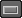

如果愿意，可以将层看作包含和组织动画包的 Take。可以将层用作 Take 来比较动画的变化。
使用层来比较动画的变化
- 执行以下操作设置第一个层“Take”：
- 选择要设置动画的对象。
- 在“动画层编辑器”(Animation Layer Editor)中，选择“层 > 从选定对象创建覆盖层”(Layers > Create Override Layer From Selected)。（另请参见创建动画层。）
- 重命名新的覆盖层“Take1”。
- 在对象仍处于选定状态的情况下，单击“动画层编辑器”(Animation Layer Editor)中的
 创建另一个层，然后将其重命名为“Take1_Layer1”。
创建另一个层，然后将其重命名为“Take1_Layer1”。
默认情况下，该层处于“相加”(Additive)模式。
- 使用鼠标中键将 Take1_Layer1 拖动到 Take1。
这样便设置了层层次，将 Take1_Layer1 设置为 Take1 的子对象。（另请参见建立和断开动画层的父子关系。）
- 选择 Take1_Layer1，并为对象设置动画。请参见设定动画层上的对象的关键帧。
- 根据 Take1 的需要在层上重复步骤 2 - 4 以创建和设置所需数量的动画。
- 通过重复步骤 1 - 5 来设置第二个层“Take”。此时，将覆盖层命名为“Take2”，将相加子层命名为“Take2_Layer1”，以此类推。
现在在您的动画层堆栈中，有两个同级层层次，一个用于 Take1，一个用于 Take2。
- 播放动画。
请注意，在场景中仅播放在层的 Take2 层次中创建的动画。由于 Take1 和 Take2 父层都处于“覆盖”(Override)模式，而 Take2 在堆栈中较高，因此 Take2 的动画覆盖 Take1 的动画。
- 若要查看 Take1 动画（并将其与 Take2 比较），为 Take1 层单击按钮 ，然后播放动画。
单放 Take1 时，Take2 层及其子对象自动禁用，使您在场景中仅能查看 Take1 的动画。